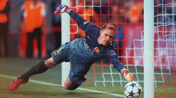
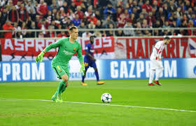

Medio
arquero es en primer lugar, el hombre decisivo en la defensa.
impedir goles transmite seguridad al resto del equipo.
Al tener una visión panorámica del campo desde atrás y con total perspectiva,
es capaz de mandar y dirigir tanto a la zaga como al resto del equipo.
El papel del portero es extraño, de cierta manera ajeno al juego. Se viste diferente, tiene aditamentos (los guantes)
que lo distinguen, y las reglas para él distan en muchos sentidos de las que rigen al resto de sus compañeros.
Muchas veces el destino del equipo recae sobre sus hombros, pero al mismo tiempo, es poco probable que sea quien logre
las anotaciones que necesita un conjunto para salir vencedor. El guardameta es una tensión constante.
Explicación Arqueros

¿A nivel general, que principales aspectos valoraremos en un portero?
- Buena técnica de blocaje y de desvío .
- Capacidad de juego con los pies.
- Buenos desplazamientos y ubicaciones en portería.
- Capacidad de anticipación a cualquier tipo de jugada (reflejos)
¿Que no pueden hacer los porteros?
posición del guardameta es la más especializada de todas dentro del campo.
Se los diferencia de los jugadores de campo ya que los porteros pueden tocar la pelota con cualquier parte de su cuerpo
excepto cuando no están en el área de penal, donde no se les permite usar manos y brazos.

¿Que usan los arqueros de fútbol?
La camiseta suele tener mangas largas y un suave acolchonamiento en codos y hombros.
Además los guardametas son los únicos jugadores a los que se les permite llevar
pantalones largos, gorra y máscara, según lo permita el árbitro.
1. Guantes:
Los guantes que vendemos en nuestra página, los que puedes ver en Store Futbol Colombia, son diseñados para proteger las extremidades superiores del deportista.
En la actualidad, se fabrican de tela que permite que el sudor se disipe rápidamente para que el jugador se sienta más cómodo.
Tienen patente para condiciones de humedad que proporciona mayor adherencia a la piel y mejor rendimiento porque no se resbalan.
De igual forma, poseen correas que rodean toda la muñeca para mejorar su ajuste y relieves para proteger la mano de los golpes al recibir la pelota.
2. Los pantalones:
Son muy diferentes a los del resto de los jugadores. En realidad, son piezas que se ajustan al cuerpo ya que este deportista no está corriendo
durante la mayoría del juego. Al contrario, está detenido esperando que el balón se acerque para hacer su jugada.
En este enlace puedes ver los modelos que se ofrecen, piezas que permiten que la transpiración del jugador no afecte sus movimientos por la tela que se utiliza.
Las piezas tienen amortiguación a lo largo de las piernas y entrepiernas para mantener al jugador lo menos lastimado posible.
Los nuevos modelos están provistos de un gel antideslizante que evita que, al recibir la pelota, al jugador se le deslice por la tela y pierda el control del balón.
3. Canilleras para proteger sus piernas:
En estos momentos se fabrican más acolchadas para que sean más cómodas y anatómicas.
Se ajustan a las piernas y pies de los arqueros. Se fabrican para cubrir por completo las piernas, talones y pies, y se fabrican sencillas para cubrir únicamente las canillas.
4. Por último, hablemos de los buzos del uniforme de arquero:
Cubren la parte superior del cuerpo y eliminan rápidamente el sudor para comodidad del jugador. Se han agregado gomas en ciertas partes del buzo para disipar
la fuerza con la que el balón golpea al arquero al momento de un choque y para evitar que se lastime cuando toque el suelo por culpa de una caída.
Atajadas
son algunos ejemplos de como trabaja un portero:
Atajadas